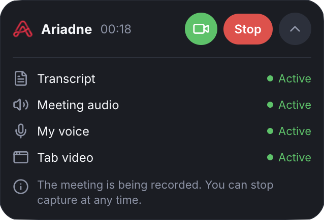
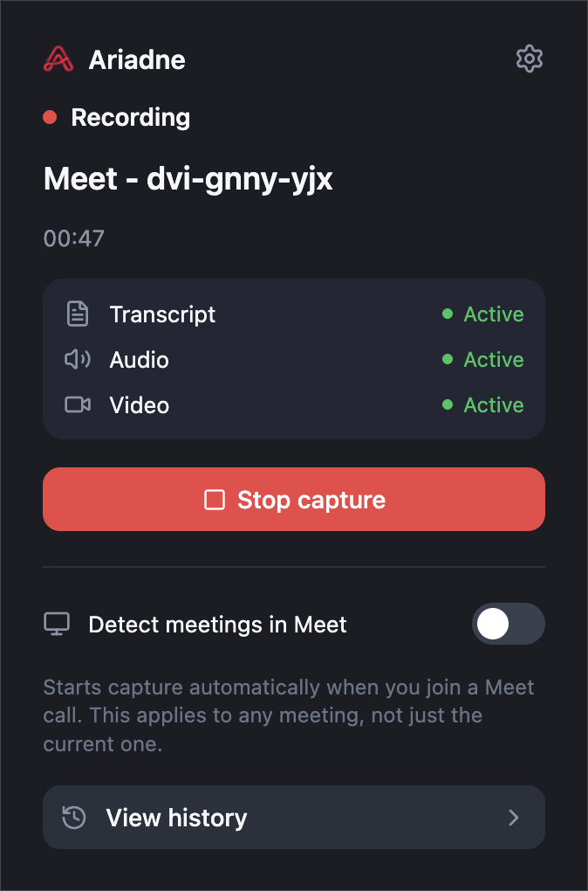
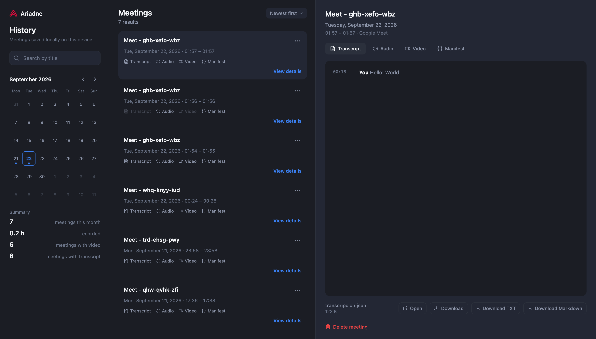

Nothing leaves your device — audio, video, and transcripts are written straight to your browser's private storage; there is no backend to send them to.
 Ariadne
AriadneRecord every Google Meet call —
without it ever leaving your laptop
Ariadne captures audio, video, and a live transcript automatically, and stores all of it locally in your browser. No account, no cloud, no subscription.
Open source · Google Meet only · Nothing uploaded, ever

Every other meeting recorder asks you to trust a server you'll never see.Ariadne just doesn't have one.
Starts itself — recording begins the moment you join a Google Meet call, no button to remember to press.
One mixed track, not five — your microphone and everyone else's voice are combined in real time into a single audio file, automatically.
A transcript you can search — every line is attributed to whoever said it, pulled live from Meet's own captions.
How it works
1
Install the extension from the Chrome Web Store.
2
Join a Google Meet call. Recording starts automatically.
3
Open History anytime to search, play back, or download any past meeting.


FAQ
Does Ariadne upload my recordings anywhere?
No. There is no backend, no account system, and no analytics. Everything is written to your browser's own private storage (Origin Private File System and chrome.storage), and the only way a file leaves that storage is if you click download.
Which meeting platforms are supported?
Google Meet only, for now. The architecture is not tied to a single platform, so support for others may follow.
Do other participants know they are being recorded?
There is no visible indicator in the meeting. Ariadne is a personal tool for taking your own notes, not a meeting bot — you are responsible for complying with your jurisdiction's recording consent laws when you use it.
Is Ariadne free?
Yes. No subscription, no usage limits, no account to create.
What happens to a recording if I uninstall the extension?
It is erased, since it only ever lived in the extension's own storage and nowhere else.
Can I get video, not just audio?
Yes, one click on the banner inside the meeting enables video for that meeting. Chrome requires that one confirmation for screen capture; there is no way around it.
Is the code open source?
Yes — the full source is on GitHub.
What permissions does it need, and why?
storage and unlimitedStorage to save recordings locally, offscreen to run local audio/video conversion, downloads so you can save a file to your computer, and host access limited to meet.google.com to detect meetings and read captions. Nothing else.